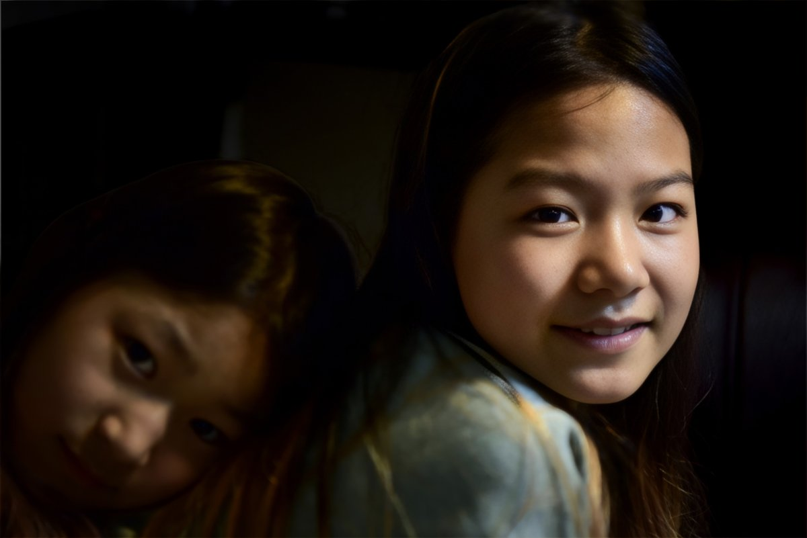

축복의 선물
저녁 무렵의 거실
딸아이 집에 들렀다가, 두 아이가 서로에게 기대어 편안해하는 순간을 조용히 담았습니다. 밖에서 들여다보다 숨을 죽이고 셔터를 눌렀습니다.
혼자 있으면 좀 그럴 텐데, 둘이 놀다가도 언니가 있으면 기대고 서로 또 기대는 것을 좋아합니다. 그 모습을 보며 이것이 정말 만남의 축복이구나 싶었습니다.
서로에게 기댈 수 있는 사람이 있다는 것, 그것은 삶이 우리에게 주는 참으로 소중한 축복의 선물입니다.